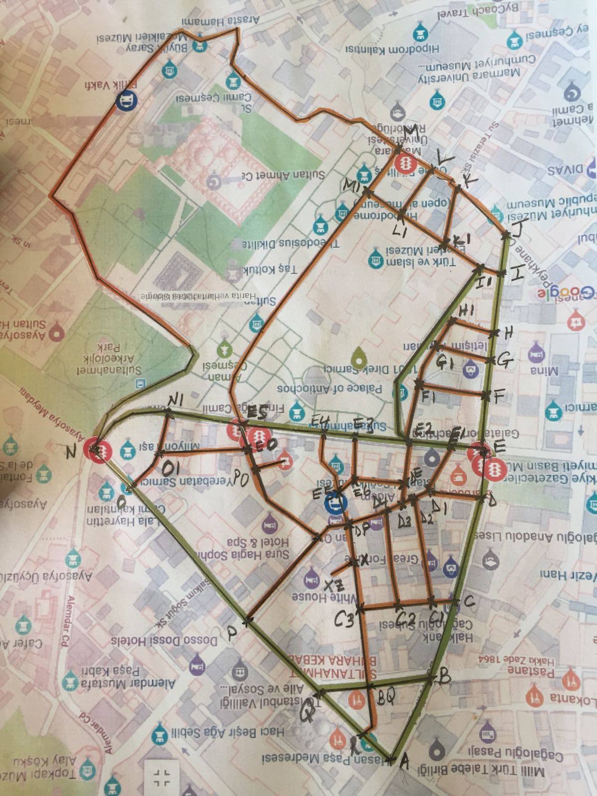
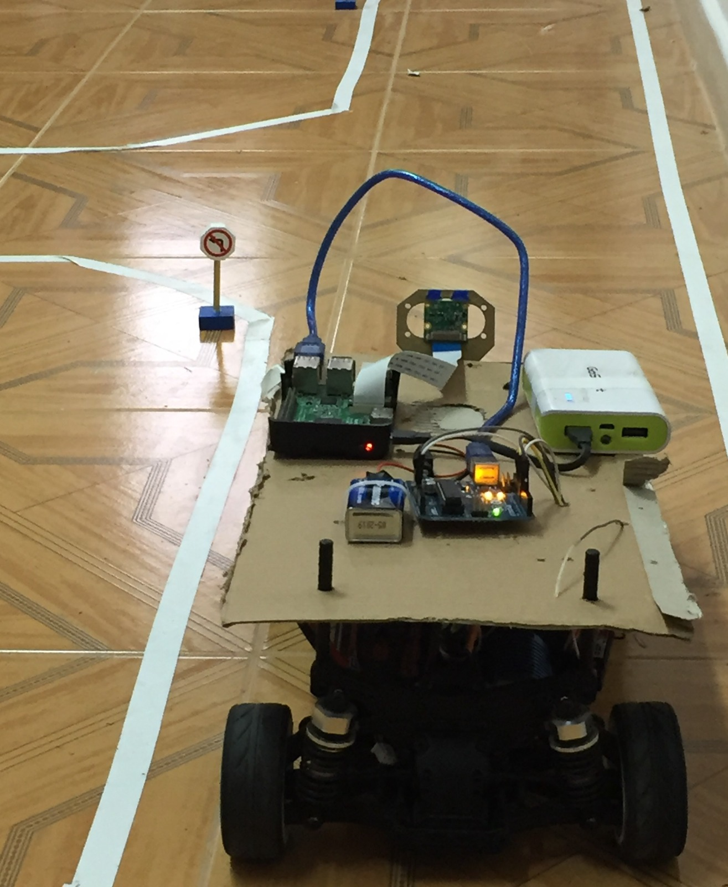
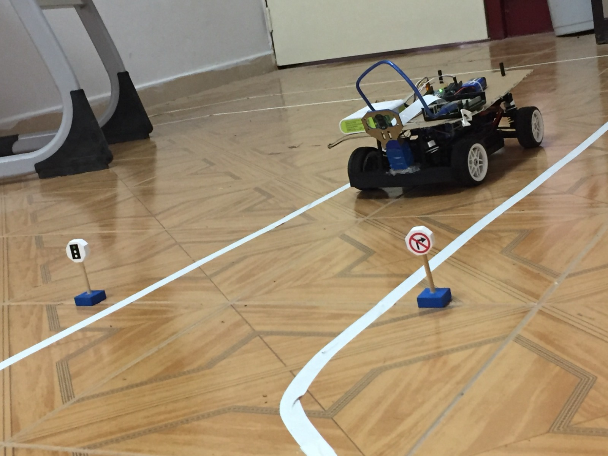

The Robot - Taxi
- 
- 
- 
-
This project kicked-off when I took part in the Teknofest Istanbul competition in 2018 and continued it as my graduation project. The goal was to build a self-driving taxi. The purpose of the taxi was to autonomously navigate a multi-routed track, recognize traffic signs and taxi passengers from pick-up to drop-off locations using the 2D coordinates of which were communicated wirelessly by the passenger
I used keras (tensorflow) to train two convolutional neural networks; one to steer the car on the track and the other to detect traffic symbols. I obtained training data for the steering task by using opencv to read the video frames from a front-facing raspberry pi camera as input and the steering angle of the rc car as output. The steering angle of the rc car was harnessed by connecting an arduino to the rc receiver to read the pulse values from the transmitter and mapping them to some range.
Owing to the imprecise nature of modern GPS devices for localization on the track, I turned to using a graph model. With the entire track known, I approximated it into a finite amount of straight lines, connected at intersections, which served as reference points with known coordinates. The exact location of the robot reduced to a linear approximation from the last reference point, and the optimal path to a location reduced to a minimum distance graph problem, which was implemented using the bellman ford algorithm, with the euclidean distance between intersections serving as the weights. With the robot trained to run at a constant speed, it was able to compare the distance it had covered with respect to time to the distance outputted by the graph and thereby estimate its exact location on the track.
The project taught me the fundamentals of deep learning, computer vision, graph data structures and mobile robot dynamics.